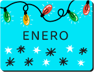

Sabías que...
La existencia de días, semanas o años estatales, nacionales, mundiales e internacionales sirven para abordar problemas de la comunidad, así como para celebrar y reforzar los logros de la humanidad.
Los gobiernos, la sociedad civil, el sector público y el privado, las escuelas, las universidades y, en general, los ciudadanos, hacen de estas fechas una plataforma para diversas actividades de sensibilización. En esta sección te reunimos algunas fechas que pueden ser de tu interés.
